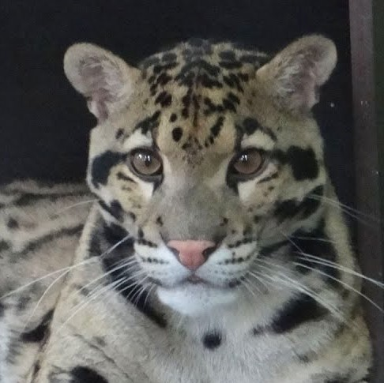

|
Fehér tigris (Panthera tigris)
- Zira és Nermal
- Délkelet-Ázsiában, India középső és déli részein, nagyon ritkán fordulnak elő.
A fehér tigris feltűnő fehér színét egy recesszív allél dupla megjelenése okozza, körülbelül minden 10 000. születésre jut egy fehér kölyök.
Ezen fenotípus megjelenése azonban beltenyésztéssel is elérhető. A különös az, hogy csak a bengáli tigrisnél fordul elő ez a jelenség.
Teste 2,28–3,11 méter hosszú, tömege 72–258 kilogramm (átlagosan 172-196 kilogramm).
- Örökbefogadója: ÁRKÁD Szeged, GYM CLASS Szeged, REGIO Játék
|
Ocelot (Leopardus pardalis)
- Moyo
- Az ocelot Chile kivételével minden dél- és közép-amerikai országban előfordul.
Bundája alapvetően homokszínű-világosbarna (minél nyíltabb területen él, annál világosabb) számos fekete folttal,
amelyek a hátán és a fejrészen vízszintes csíkokká állnak össze, és a farkon is nagyon sűrűek. A hasa alja piszkosfehér-krémszínű.
Testhossza 55-101,5 centiméter, farka 27-45 centiméter hosszú, magassága a vállaknál 45 centiméter, testtömege 6,6-18,6 kilogramm körül mozog.
- Örökbefogadója: Makói Óvoda Kassai utcai tagintézménye
|
|
Karakál (Caracal caracal)

- Dana és Ruan
- Afrikában és Délnyugat-Ázsiában élő macskaféle.Teste vörösesbarna-homokszínű, foltok nélkül (a kölykök még foltosak).
A füle fekete, álla, torka és hasa fehér. Felső ajkát nagy, fekete folt tarkítja, és orra szélétől a szeméig is fekete sáv húzódik.
Rövid szőre szorosan testére simul. Fülén a szőrpamacs dúsabb és hosszabb, mint a hiúzokén. Igen karcsú, a lába meglehetősen hosszú.
Marmagassága 38–50 centiméter, testhossza 60-91,5 centiméter, farka rövid (23-31 centiméter). Testtömege 6–19 kilogramm.
- Örökbefogadója: Baromfiudvar 2002. Kft.
|
Margaritamacska (Felis margarita)
- Mocha és Felix
- A homoki macska elszórtan Észak-Afrika, Nyugat- és Közép-Ázsia területén él.
A homoki macska veszélyeztetett faj. Az állat fej-törzshossza 43-52 centiméter, farokhossza 23-31 centiméter.
Testtömege 1,5-3,4 kilogramm. A macska bundája homokszínű. Farkát kicsit sötétebb gyűrűk övezik.
Füle oldalt helyezkedik el a fején. Lába nagyon rövid, talpát két centiméter hosszú szőrökből álló párna fedi,
így biztosan meg tud állni a forró, laza homokon.
- Örökbefogadója: SZTE Herman Ottó Kollégium tagjai, Tappancs Állatvédő Alapítvány
|
|
Ködfoltos párduc (Neofelis nebulosa)

- Nala
- Elterjedési területe Dél-Kínára, a Himalája keleti részére, Északkelet-Indiára és Délkelet-Ázsiára terjed ki.
61–106 centiméter hosszú, súlya 11–23 kilogramm. Bundája színe világos-sárgásbarnába hajló, gyakran halvány mintázattal, hátán részleges dupla csík fut.
Sárgásbarna, homokszínű bundáját jellegzetes, szabálytalan formájú, leginkább felhőhöz hasonlító,
sötét szélű foltok díszítik – ezekről kapta általános és tudományos nevét is. Teste zömök,
szemfogai az élő macskafélék közül arányosan a leghosszabbak (több mint 5 centiméteresek).
- Örökbefogadója: ÁRKÁD Szeged, Soproni Ifjúsági és Média Klub
|
Szervál (Leptailurus serval)
- Odis
- A szervál Afrika viszonylag gyakori faja. Hossza 67–100 cm, amelyhez mintegy 24-45 centiméteres farok tartozik.
Tömege 9 és 18 kilogramm között mozog. Marmagassága körülbelül 54-62 centiméter. Karcsú állat, hosszú nyakkal, lábakkal és aránylag rövid farokkal.
Nagy, ovális fülei egymáshoz közel helyezkednek el. Szőrzetének mintázata változatos, általában homokszínű alapon fekete pettyekből áll.
- Örökbefogadója: Alienline Kft.
|
|
Pennant - papagáj
- Név: Penny
-
Ausztrália erdővel borított part menti területein fordul elő.
Elsősorban a ligeterdőket és mezőgazdasági területeket részesíti előnyben, de akár árterekben is előfordulhat.
Közepes méretű papagájfaj, átlagos súlya 55-65 gramm, de tömege elérheti a 115-170 grammot is.
Testhossza 32-37 cm. 1-2 évesen érik el az ivarérettséget, ekkor alakul ki a felnőttekre jellemző színezetük is.
- Örökbefogadója: Lévai Liliána Margit
|
Nagy jácintara (Jácintkék ara)
- Nagy jácintara (Jácintkék ara)
-
Ezekkel a csodálatos madarakkal a hatalmas Brazíliában, Bolíviában vagy Paraguay-ban találkozhat.
Ezek a madarak erdőkben élnek, ahol könnyebb élelmet keresni és elrejteni a ragadozóktól.
A kék papagáj testhossza elérheti a 100 cm-es jelölést, ezek fele a csodálatos farokba esik.
A tollas óriás súlya kb. 1,5 kg. A papagáj tollazatának színe gazdag kobalt-kék árnyalatú. A szín különbözõ intenzitású lehet - ezeket a madarakat szürke-kék jácint ara papagájnak is nevezik.
A tollazott mancsok szürke, fekete csőr.
- Örökbefogadója: PICK Szeged Szalámigyár és Húsüzem ZRt.
|
|
Nappapapagáj
- Név: Ré, Hathor
-
A nappapagájok Dél-Amerika északkeleti részén, pontosabban Venezuela keleti részén, Guyana, Surinam, Francia Guyana délnyugati részén és Brazília északkeleti területein, Roramia tartománytól Paráig, valamint a Kelet-Amazonas mentén őshonosak.
A nappapagájok evezőtollai sötétkékek, faroktollaik olajzöldek, a csúcsukon kék beütéssel.
Szárnyaik kis- és közép-fedőtollai sárgák, a nagyok zöldek, végükön sárga foltokkal. Érdekesség, hogy a nagy fedőtollak színe egyedenként változhat, és akár zöld vagy sárga is lehet.
A nappapagájok teljes hossza 300-310 milliméter, szárnyhosszuk 146-162 milliméter, farkuk hossza 121-146 milliméter, csőrük 19-25 milliméter, testtömegük pedig 100-120 gramm, míg átlagos élettartamuk 25-30 év közötti.
- Örökbefogadója: Napfény Ingatlaniroda Szeged, ingatlanközvetítő
|
Rózsásmellű szakállaspapagáj
- Név: Rozsdi
- Banglades, Bhután, Kambodzsa, Kína, India, Indonézia, Laosz, Malajzia, Mianmar, Nepál, Thaiföld és Vietnám területén honos.
Szingapúrba betelepítették. Vándorlásai során Hongkongban is előfordul.
Tollazata nagy részben zöld, melle rózsaszín. Szárnya 15 cm, a középső szárnyfedők zöldessárgág.
Az alsó szárnyfedők halványzöldek. A farka 19 cm, a két középső toll türkíszkék, csúcsuk, valamint a külső tollak és az alsó felület sárgászöld.
A pupilla sötétbarna, szemgyűrűje halványsárga, csőre 2- 5 cm alsó és felső káva korall-vörös, a lába szürke. A teljes hossza 33 cm.
- Örökbefogadás alatt áll.
|
|
Jákópapagáj (Psittacus erithacus)
- Név: Hamu
-
Más néven szürke papagáj. Közép- és Nyugat-Afrikán kívül Príncipe szigetén is megtalálható.
Leginkább a nedves, síkvidéki erdőket kedveli, de akár 2200 m-es tengerszint feletti magasságig is felhatolhat.
Olykor erdőszéleken, tisztásokon, ligeterdőkben, fás szavannákon, művelt területeken vagy kertekben is találkozhatunk vele, nem érzékeny az emberi zavarásra.
Kedveli a víz közelében található fészkelőhelyeket. A jákó tollazata és szeme szürke színű, szemét fehér színű foltok veszik körül. Csőre fekete, faroktollai vörös színűek.
Több alfaja ismert, melyek elterjedési területük mellett némiképp színükben is különböznek egymástól.
A jákó az egyik legnagyobb afrikai papagájfaj, teste 33 cm hosszú, szárnyfesztávolsága átlagosan 46-52 cm.
- Örökbefogadója: Juhász Gyula Gyakorló Általános Iskola, 2/b osztálya
|
Sárgabóbitás kakadu
- Név: Nigel
- A nagy sárgabóbitás kakadu a madarak osztályának a papagájalakúak rendjéhez, ezen belül a kakadufélék családjához tartozó faj.
Észak-, Dél- és Délkelet-Ausztráliában, Tasmaniában, valamint a partjaik előtti szigetek némelyikén honos, valamint Indonézia és Pápua Új-Guinea területén is előfordul.
Mindenekelőtt gyér, erdős vidékeken. Betelepítették Új-Zélandra is. E kakadu testhossza 45-51 centiméter, testtömege a hímnek 820-920 gramm, míg a tojónak 840-970 gramm.
Tollazata fehér, de ahogy neve is mondja bóbitája kénsárga.
- Örökbefogadója: Tóth Bettina
|